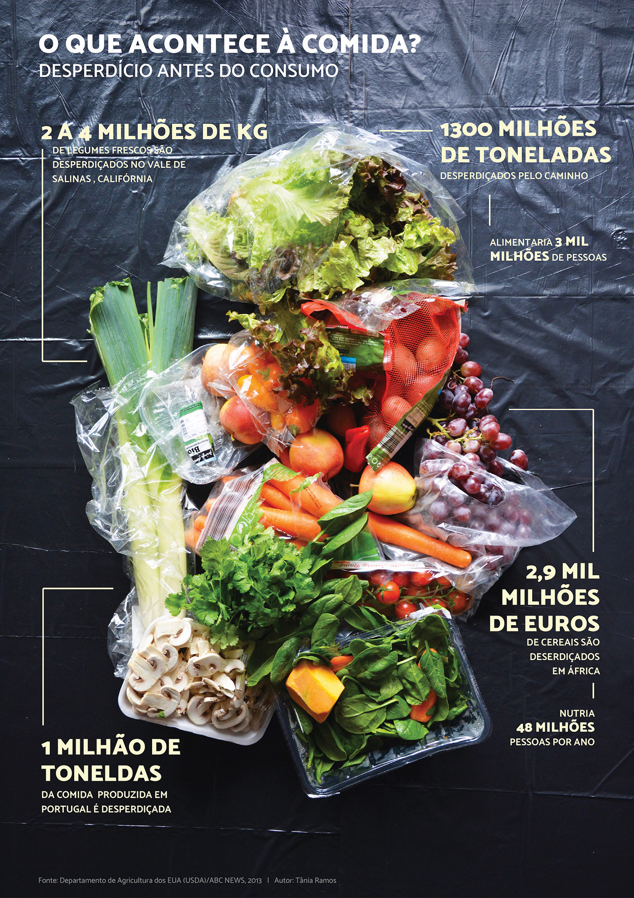
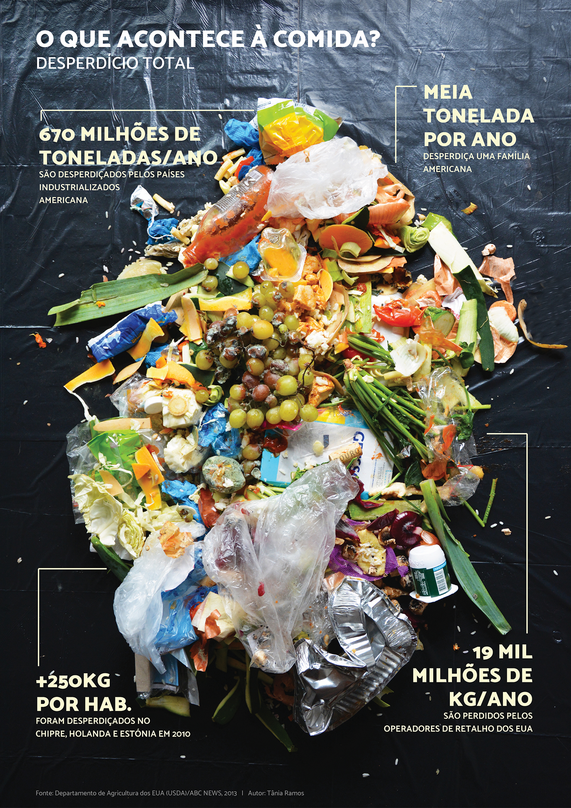
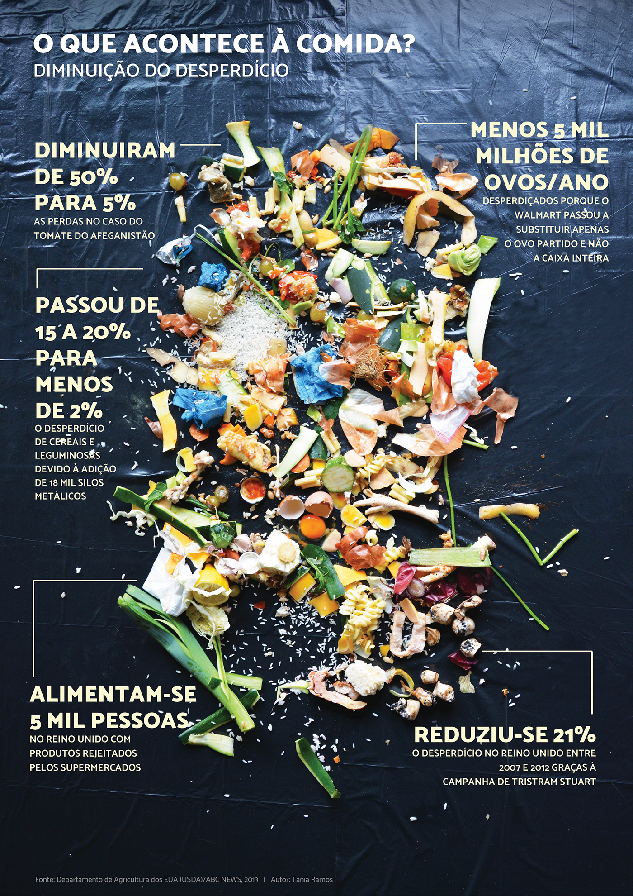
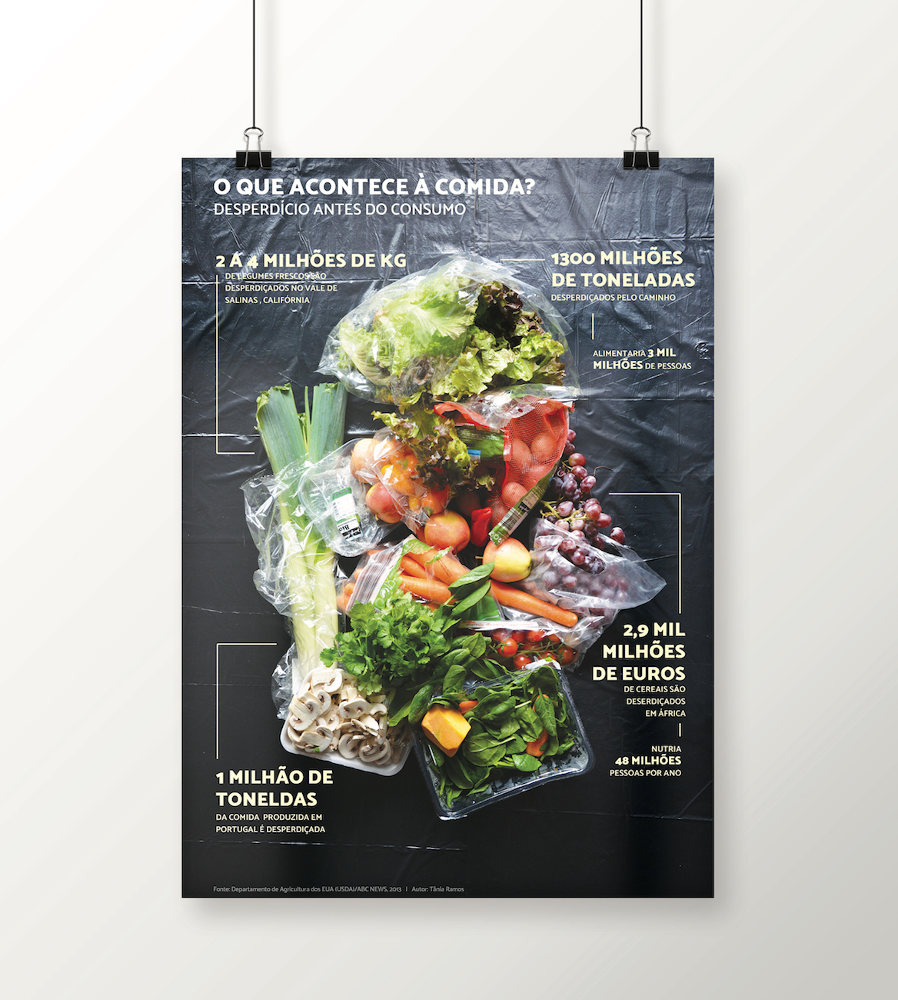
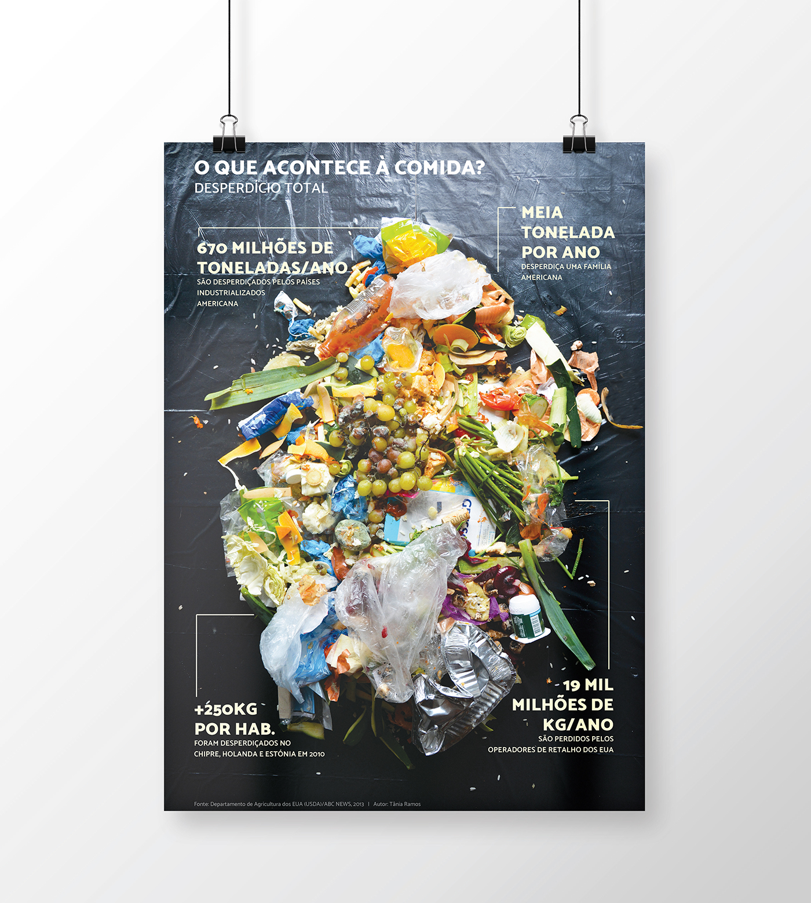
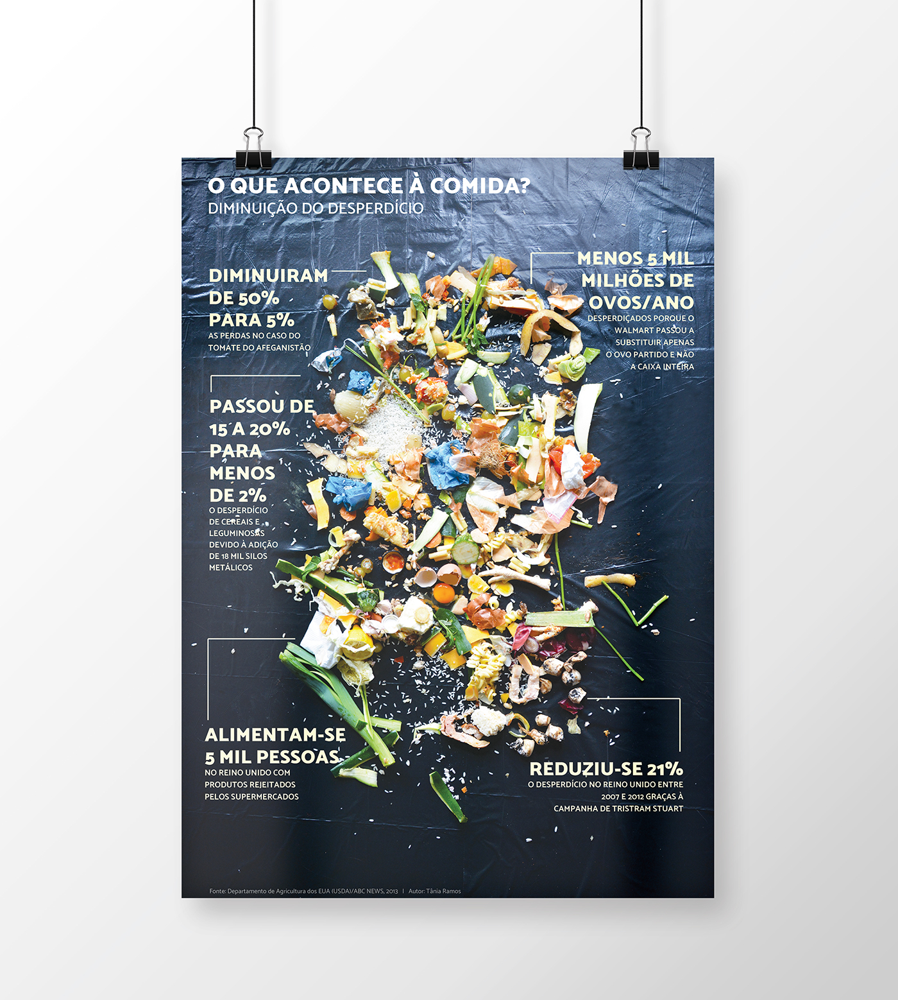

WHAT HAPPENS TO FOOD?
Fourth Year of University
First Infographic - Waste before consumption
Second Infographic - Total waste
Third Infographic - Waste reduction
First Infographic in a mockup
Second Infographic in a mockup
Third Infographic in a mockup
For my infographic I wanted to choose a “real” theme, something we deal with every day and that could raise awareness and have an impact on the viewer. The theme I chose was Food Waste and I titled my work "What happens to food?". Having these goals in mind, I opted for a photographic info graph to represent the reality of waste. Since the data I collected in my research, from a National Geographic report, was too extensive, I chose to do a series of three infographics that work both individually and together. The first one represents waste before consumption - the photograph shows the products still in their package; the second info graph is about total waste, so the photograph shows a pile of various waste; finally, the last one represents the improvements that have been achieved, so the photograph shows a different pile of waste that is noticeably cleaner than the second one.

© Faculdade de Belas Artes da Universidade do Porto | 2016 | Portefólio Tânia Ramos